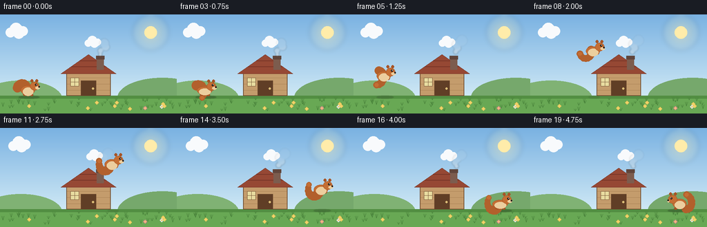
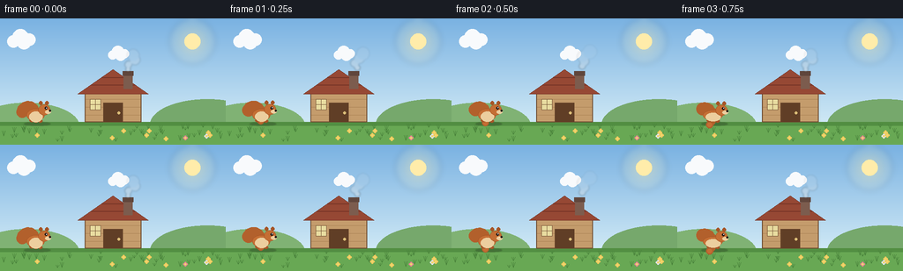

CODING AGENTS AS PIXEL WORLD MODELS
traex/Seed-2.1-Pro-0915 · dynamic_spatial_relationship_0024
点击播放 · 原生 RGB 像素
逐轮保存的候选
回放视频、检查图与代码变化。
每份候选均可单独播放。实际图片检查记录在下方工具轨迹中。
候选 01播放与检查图
点击播放 · 原生 RGB 像素


展开代码变化
--- 上一保存版本
+++ 本次保存版本
@@ -0,0 +1,288 @@
+"""Procedural text-to-video: a squirrel jumps from the left of a hut to its right.
+
+Renders 20 RGB frames (256x144, 4 fps) entirely with PIL/numpy geometry.
+Scene is drawn at 2x supersampling and downscaled for smooth edges.
+"""
+import math
+import os
+
+import numpy as np
+from PIL import Image, ImageDraw, ImageFilter
+
+import artifact_io
+
+W, H, N, FPS = 256, 144, 20, 4
+SS = 2 # supersampling factor
+
+# Palette
+SKY_TOP = (122, 178, 226)
+SKY_BOT = (206, 232, 245)
+SUN = (255, 236, 170)
+CLOUD = (248, 250, 252)
+GROUND = (104, 168, 84)
+GROUND_DARK = (82, 142, 66)
+GRASS = (72, 130, 58)
+HUT_WALL = (196, 156, 108)
+HUT_WALL_DARK = (170, 128, 84)
+ROOF = (150, 72, 52)
+ROOF_DARK = (118, 52, 38)
+WOOD = (110, 76, 48)
+DOOR = (96, 62, 38)
+WINDOW = (232, 220, 160)
+CHIMNEY = (124, 92, 78)
+SQ_FUR = (196, 110, 52)
+SQ_FUR_D = (166, 84, 38)
+SQ_CREAM = (236, 206, 158)
+SQ_TAIL = (178, 96, 44)
+BLACK = (38, 28, 24)
+
+GROUND_Y = 118 # horizon / ground line in 1x coords
+
+
+def s(v):
+ return int(round(v * SS))
+
+
+def make_background():
+ """Static landscape with hut, drawn at supersampled resolution."""
+ img = Image.new("RGB", (W * SS, H * SS))
+ d = ImageDraw.Draw(img)
+
+ # Sky gradient
+ for y in range(s(GROUND_Y)):
+ t = y / s(GROUND_Y)
+ col = tuple(int(SKY_TOP[i] + (SKY_BOT[i] - SKY_TOP[i]) * t) for i in range(3))
+ d.line([(0, y), (s(W), y)], fill=col)
+
+ # Sun with soft glow
+ sx, sy = s(218), s(26)
+ glow = Image.new("RGBA", img.size, (0, 0, 0, 0))
+ gd = ImageDraw.Draw(glow)
+ for r, a in ((26, 26), (20, 40), (14, 70)):
+ gd.ellipse([sx - s(r), sy - s(r), sx + s(r), sy + s(r)], fill=SUN + (a,))
+ glow = glow.filter(ImageFilter.GaussianBlur(s(3)))
+ img = Image.alpha_composite(img.convert("RGBA"), glow).convert("RGB")
+ d = ImageDraw.Draw(img)
+ d.ellipse([sx - s(9), sy - s(9), sx + s(9), sy + s(9)], fill=SUN)
+
+ # Distant hills
+ d.ellipse([s(-30), s(96), s(90), s(150)], fill=(128, 178, 116))
+ d.ellipse([s(170), s(92), s(300), s(150)], fill=(118, 168, 108))
+
+ # Ground
+ d.rectangle([0, s(GROUND_Y), s(W), s(H)], fill=GROUND)
+ d.rectangle([0, s(GROUND_Y), s(W), s(GROUND_Y + 4)], fill=GROUND_DARK)
+
+ # Grass tufts and little flowers (deterministic)
+ rng = np.random.default_rng(7)
+ for _ in range(46):
+ gx = int(rng.integers(4, W - 4))
+ gy = int(rng.integers(GROUND_Y + 6, H - 3))
+ h = int(rng.integers(3, 7))
+ for k in (-1, 0, 1):
+ d.line([s(gx), s(gy), s(gx + k * 2), s(gy - h)], fill=GRASS)
+ for _ in range(10):
+ fx = int(rng.integers(8, W - 8))
+ fy = int(rng.integers(GROUND_Y + 10, H - 6))
+ col = [(238, 200, 92), (232, 132, 150), (226, 226, 240)][int(rng.integers(0, 3))]
+ for k in range(4):
+ ang = k * math.pi / 2
+ d.ellipse(
+ [s(fx + math.cos(ang) * 1.6) - s(0.9), s(fy + math.sin(ang) * 1.6) - s(0.9),
+ s(fx + math.cos(ang) * 1.6) + s(0.9), s(fy + math.sin(ang) * 1.6) + s(0.9)],
+ fill=col,
+ )
+ d.ellipse([s(fx) - s(0.8), s(fy) - s(0.8), s(fx) + s(0.8), s(fy) + s(0.8)], fill=(240, 214, 110))
+
+ # ---- Hut ----
+ hx0, hx1 = 96, 160 # wall span
+ wall_top, wall_bot = 84, GROUND_Y
+ roof_peak = 58
+ # wall
+ d.rectangle([s(hx0), s(wall_top), s(hx1), s(wall_bot)], fill=HUT_WALL)
+ # plank lines
+ for py in range(wall_top + 8, wall_bot, 9):
+ d.line([s(hx0), s(py), s(hx1), s(py)], fill=HUT_WALL_DARK)
+ d.rectangle([s(hx0), s(wall_top), s(hx1), s(wall_bot)], outline=WOOD, width=s(1))
+ # roof
+ d.polygon(
+ [(s(hx0 - 8), s(wall_top + 2)), (s(128), s(roof_peak)), (s(hx1 + 8), s(wall_top + 2))],
+ fill=ROOF,
+ outline=ROOF_DARK,
+ )
+ # roof shingle lines
+ for frac in (0.32, 0.62):
+ ly = roof_peak + (wall_top + 2 - roof_peak) * frac
+ half = (hx1 + 8 - (hx0 - 8)) / 2 * frac
+ d.line([s(128 - half), s(ly), s(128 + half), s(ly)], fill=ROOF_DARK, width=s(1))
+ # chimney
+ d.rectangle([s(140), s(62), s(150), s(80)], fill=CHIMNEY)
+ d.rectangle([s(139), s(60), s(151), s(65)], fill=(96, 70, 60))
+ # door
+ d.rectangle([s(117), s(96), s(139), s(wall_bot)], fill=DOOR, outline=WOOD)
+ d.ellipse([s(133), s(106), s(136), s(109)], fill=(220, 190, 120))
+ # window
+ d.rectangle([s(102), s(92), s(114), s(104)], fill=WINDOW, outline=WOOD)
+ d.line([s(108), s(92), s(108), s(104)], fill=WOOD)
+ d.line([s(102), s(98), s(114), s(98)], fill=WOOD)
+ return img
+
+
+def draw_cloud(img, cx, cy, scale=1.0):
+ d = ImageDraw.Draw(img)
+ for dx, dy, r in ((-10, 2, 7), (-2, -3, 9), (8, 0, 7), (2, 3, 8)):
+ x, y, rr = s(cx + dx * scale), s(cy + dy * scale), s(r * scale)
+ d.ellipse([x - rr, y - rr, x + rr, y + rr], fill=CLOUD)
+
+
+def draw_smoke(img, frame):
+ """Puffs rising from the chimney."""
+ overlay = Image.new("RGBA", img.size, (0, 0, 0, 0))
+ od = ImageDraw.Draw(overlay)
+ for k in range(4):
+ phase = (frame * 1.7 + k * 5) % 20
+ px = 145 + math.sin(phase * 0.8) * 3 + phase * 0.5
+ py = 58 - phase * 1.1
+ r = 2.5 + phase * 0.28
+ alpha = max(0, 110 - phase * 5)
+ od.ellipse([s(px - r), s(py - r), s(px + r), s(py + r)], fill=(225, 225, 225, int(alpha)))
+ overlay = overlay.filter(ImageFilter.GaussianBlur(s(0.8)))
+ img.alpha_composite(overlay)
+
+
+def draw_squirrel(img, cx, feet_y, airborne, squash, facing, tail_phase, breathe):
+ """Draw a squirrel centered at cx, with feet at feet_y (1x coords)."""
+ layer = Image.new("RGBA", img.size, (0, 0, 0, 0))
+ d = ImageDraw.Draw(layer)
+
+ def E(x0, y0, x1, y1, fill, outline=None):
+ d.ellipse([s(min(x0, x1)), s(min(y0, y1)), s(max(x0, x1)), s(max(y0, y1))],
+ fill=fill, outline=outline)
+
+ # Local coordinates: origin between feet; x grows toward facing direction.
+ fx = float(facing)
+ bx = cx - fx * 2 # body center
+ body_w, body_h = 20.0, 13.5
+ body_h *= (1 - squash * 0.25) * (1 + breathe * 0.04)
+ body_w *= (1 + squash * 0.22)
+ by = feet_y - 8 - (breathe * 0.6)
+
+ # ---- Tail: bushy chain of circles curling behind the body ----
+ tail_base_x = bx - fx * 9
+ tail_base_y = by + 1
+ curl = tail_phase
+ for i in range(9):
+ t = i / 8.0
+ # curl up and forward over the back
+ ang = math.pi * (0.15 + 0.95 * t) + curl * 0.25
+ r_tail = 6.5 - t * 2.2
+ tx = tail_base_x - fx * (math.cos(ang) * (7 + 3 * t))
+ ty = tail_base_y - math.sin(ang) * (8 + 5 * t) - 1
+ rr = r_tail * (1 + 0.12 * math.sin(curl + t * 3))
+ E(tx - rr, ty - rr, tx + rr, ty + rr, SQ_TAIL)
+ # tail tip highlight
+ tip_ang = math.pi * 1.1 + curl * 0.25
+ ttx = tail_base_x - fx * math.cos(tip_ang) * 10
+ tty = tail_base_y - math.sin(tip_ang) * 13 - 1
+ E(ttx - 2.6, tty - 2.6, ttx + 2.6, tty + 2.6, SQ_FUR)
+
+ # ---- Hind leg / feet ----
+ if airborne:
+ E(bx - fx * 6, feet_y - 8, bx - fx * 1, feet_y - 3, SQ_FUR_D) # tucked hind
+ E(bx + fx * 4, feet_y - 7, bx + fx * 9, feet_y - 2.5, SQ_FUR_D) # front paw
+ else:
+ E(bx - fx * 7, feet_y - 3.5, bx - fx * 1, feet_y, SQ_FUR_D)
+ E(bx + fx * 3, feet_y - 3, bx + fx * 8, feet_y + 0.5, SQ_FUR_D)
+
+ # ---- Body ----
+ E(bx - body_w / 2, by - body_h / 2, bx + body_w / 2, by + body_h / 2, SQ_FUR, SQ_FUR_D)
+ # cream belly
+ E(bx - body_w / 2 + 3, by - body_h / 2 + 3, bx + body_w / 2 - 2, by + body_h / 2 + 1, SQ_CREAM)
+
+ # ---- Head ----
+ hx = bx + fx * 10
+ hy = by - 6
+ E(hx - 6.5, hy - 6, hx + 6.5, hy + 6, SQ_FUR, SQ_FUR_D)
+ # ears
+ E(hx - fx * 4 - 2, hy - 10, hx - fx * 4 + 2, hy - 5.5, SQ_FUR_D)
+ E(hx + fx * 3 - 2, hy - 10, hx + fx * 3 + 2, hy - 5.5, SQ_FUR_D)
+ # muzzle + nose
+ E(hx + fx * 3 - 2, hy + 0.5, hx + fx * 7.5, hy + 4.5, SQ_CREAM)
+ d.ellipse([s(hx + fx * 6.4) - s(1), s(hy + 1.2) - s(1),
+ s(hx + fx * 6.4) + s(1), s(hy + 1.2) + s(1)], fill=BLACK)
+ # eye
+ ex = hx + fx * 2.2
+ d.ellipse([s(ex) - s(1.3), s(hy - 1.8) - s(1.3), s(ex) + s(1.3), s(hy - 1.8) + s(1.3)], fill=BLACK)
+ d.ellipse([s(ex + fx * 0.5) - s(0.45), s(hy - 2.2) - s(0.45),
+ s(ex + fx * 0.5) + s(0.45), s(hy - 2.2) + s(0.45)], fill=(255, 255, 255))
+
+ img.alpha_composite(layer)
+
+
+def draw_shadow(img, cx, lift):
+ """Ground shadow that shrinks/fades as the squirrel rises."""
+ overlay = Image.new("RGBA", img.size, (0, 0, 0, 0))
+ od = ImageDraw.Draw(overlay)
+ w = 15 * max(0.45, 1 - lift / 130)
+ alpha = int(90 * max(0.3, 1 - lift / 90))
+ od.ellipse([s(cx - w), s(GROUND_Y + 2) - s(2.2), s(cx + w), s(GROUND_Y + 2) + s(2.2)],
+ fill=(40, 60, 35, alpha))
+ overlay = overlay.filter(ImageFilter.GaussianBlur(s(0.7)))
+ img.alpha_composite(overlay)
+
+
+def render_frame(frame, bg):
+ img = bg.convert("RGBA")
+
+ # Drifting clouds
+ drift = frame * 0.35
+ draw_cloud(img, (40 + drift) % (W + 30) - 15, 24, 1.0)
+ draw_cloud(img, (150 + drift * 0.6) % (W + 30) - 15, 40, 0.75)
+ draw_smoke(img, frame)
+
+ x0, x1 = 42.0, 214.0
+ jump_start, jump_end = 4, 15
+ breathe = math.sin(frame * 1.4) * 0.5
+
+ if frame < jump_start:
+ # Idle on the left, with a tiny crouch just before takeoff
+ cx = x0
+ lift = 0.0
+ airborne = False
+ squash = 0.55 if frame == jump_start - 1 else 0.0
+ facing = 1
+ elif frame > jump_end:
+ # Landed on the right; turn toward the hut on the last frames
+ cx = x1
+ lift = 0.0
+ airborne = False
+ squash = 0.5 if frame == jump_end + 1 else 0.0
+ facing = -1 if frame >= N - 2 else 1
+ else:
+ p = (frame - jump_start) / (jump_end - jump_start)
+ p_smooth = 0.5 - 0.5 * math.cos(p * math.pi) # ease in/out
+ cx = x0 + (x1 - x0) * p_smooth
+ lift = 62 * 4 * p * (1 - p)
+ airborne = True
+ squash = 0.0
+ facing = 1
+
+ feet_y = GROUND_Y - lift
+ tail_phase = frame * 0.9 + (lift * 0.05)
+ draw_shadow(img, cx, lift)
+ draw_squirrel(img, cx, feet_y, airborne, squash, facing, tail_phase, breathe)
+
+ out = img.convert("RGB").resize((W, H), Image.Resampling.LANCZOS)
+ return np.asarray(out, dtype=np.uint8)
+
+
+def main():
+ bg = make_background()
+ frames = [render_frame(i, bg) for i in range(N)]
+ case_dir = os.path.dirname(os.path.abspath(__file__))
+ artifact_io.save(np.stack(frames), case_dir)
+ print(f"Saved {N} frames ({W}x{H}, {FPS} fps) to {case_dir}")
+
+
+if __name__ == "__main__":
+ main()
可观测工具轨迹
实际执行的命令与返回图片。
命令 1exit 0
/bin/bash -lc 'cat prompt.txt GENERATION_RULES.md task_spec.json 2>/dev/null; ls -la'
命令 2exit 0
/bin/bash -lc 'cat artifact_io.py'
命令 3exit 1
/bin/bash -lc 'cd "$(pwd)" && python generate.py && ls -la frames | head -25 && ls -la pixels.npz inspection.png index.html'
命令 4exit 0
/bin/bash -lc 'python generate.py && ls frames | head -22 && ls -la pixels.npz inspection.png index.html'
保存候选 1 份；完成命令 4 次；可验证图片返回 0 张。原始 API 响应与完整日志保留在本地。